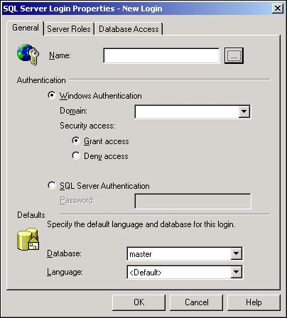

The previous sections discussed authentication, which is nothing more than the process of how SQL Server recognizes users. Authentication is much like the method used to allow people to get through the front door of an office building. The building may use a simple key card lock, or the company may use a guard to check IDs as people enter the building. In either case, the person's identity is verified before entry is granted.
Earlier in this chapter, you read about the Windows NT/2000 authentication process. When using Windows NT/2000 authentication, a trusted connection is established between SQL Server and the user's computer. However, trusted connections cannot be established between SQL Server and Windows 95 or 98 machines, or Apple Macintoshes, Unix, or other non-Windows computers.
After you determine which type of SQL Server authentication to use, you must establish a login for each of your users. A login is how the user gains access to SQL Server after the authentication process. A login is how SQL Server establishes your identity within SQL Server and how SQL Server determines your permissions to use data and database objects. You can choose from two different types of logins:
Standard SQL Server login
Windows NT/2000 login
When no trusted connection exists between the user's computer in SQL Server, SQL Server has no way of obtaining the user's identity from the operating system. Therefore, mixed mode application must be used to validate the user, and a standard SQL Server login must be created so that SQL Server recognizes the user.
The login you establish only provides access to SQL Server; it does not provide access to databases, data, or database objects.
Not every SQL Server user will be working with Windows NT and Windows 2000. Some users might be connected to the network from a Unix or Macintosh machine. These users will not be able to use a Windows NT/2000 login, and you have to establish a standard SQL Server login for them. This is also true of users who are working under Windows 95 and Windows 98.
SQL Server Enterprise Manager provides the dialog boxes that are necessary to set up standard logins. This section describes these dialog boxes and how to provide the information necessary to create standard SQL Server logins.
Creating a login can affect only one person or a group of people; it does not affect how SQL Server operates.
If the user is connecting to SQL Server from a Unix, Macintosh, or other non-Windows machine, or if the user is running Windows 98, you must create a standard login for him. SQL Server maintains a record of each person's logins and a table named sysxlogins in the master database. This table stores the user's login ID, encrypted password, and other critical information. If you'd like to view the data in this table, use the syslogins view in the master database. The syslogins view uses a SQL statement to arrange the data in a more readable format.
As the user logs in, regardless of which authentication mode he uses, his user information is compared against the data that is stored in the syslogins table. As long as the user appears to be valid, SQL Server allows him to try to access tables, stored procedures, and data.
Open Enterprise Manager and select your server.
Use the plus sign (+) next to your server's name to expand the server's object list. Then expand the security icon.
Right-click on the Login icon and select New Login from the shortcut menu.
You'll now see the new Login dialog box (see Figure 11.10). Enter the new login name in the Name text box.

Select the SQL Server Authentication option button, and enter a password for the login.
Select which database this login will normally use from the Database drop-down list in the Default section near the bottom of the New Login dialog box.
The SQL Server standard login does not permit you to use the user's NT/2000 identity. Therefore, you cannot take advantage of a user's membership in a Windows group to simplify login creation. You can, however, create a shared login. (CS would be named something like Marketing for accounting practices used by everyone who is a member of that group.) The problem is that everyone within that group will use the same password in login name, which might make security an issue.